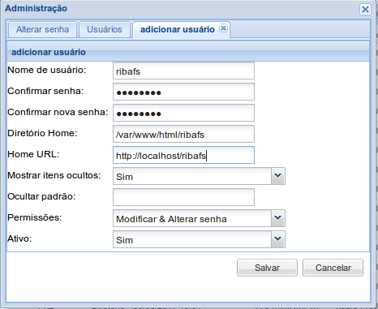
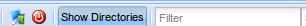

Gerenciador de Arquivos Web
O eXtplorer é um componente para Joomla do tipo gerenciador de arquivos, com uma grande quantidade de funções: upload, download, renomear, editar, excluir, descompactar, setar premissões e muito mais.
Ele também pode ser instalado independente do Joomla
A instalação no Joomla não requer nenhuma configuração, basta acessar e usar.
Mas em uma instalação fora do Joomla ele traz um usuário padrão e permite criar outros além de configurar algumas propriedades para estes.
Instalação do eXtplorer fora do Joomla
Download
https://extplorer.net/files
Efetuar o download e descompactar no servidor
No servidor, descompactar e chamar pelo navegador
http://dominio.com/extplorer
Login e senha default = admin
Trocar no primeir login
No primeiro login também existe opção de criar um novo usuário bem limitado.

Após o login, na interface do gerenciador existe um botão (ADMIN) para o gerenciamento de usuários: adicionar, editar e remover.
Ele cria os usuários criptografando suas senhas e guarda os dados dos usuários no arquivo oculto em:
config/.htusers.php
Por conta disso este arquivo precisa ter permissão de escrita para o Apache.

Ele também pode mudar sua interface para usar FTP, desde que existe servidor e porta disponível no servidor onde for instalado e também
a pasta frp_tmp requer permissão de escrita pelo Apache.
Existe também o net2ftp (http://net2ftp.com), que é uma boa alternativa mas que não funciona somente na porta 80. O net2ftp somente funciona como interface de FTP e em servidor com serviço de ftp habilitado.
Lembrando que o extplorer para o Joomla é um componente com as mesmas funcionalidades, mas não vi o botão ADMIN.